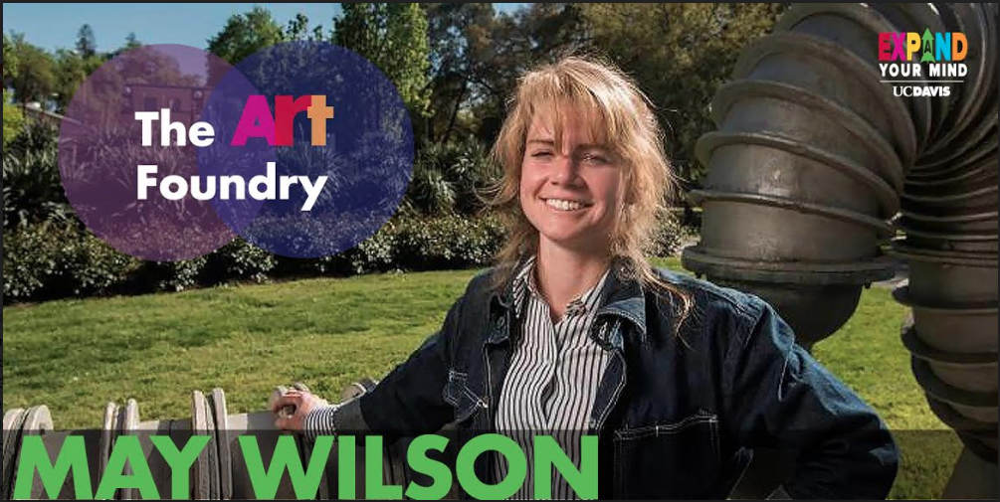
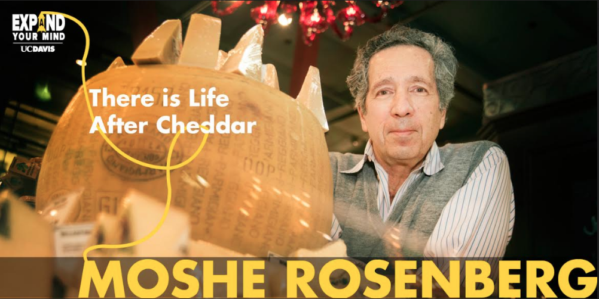
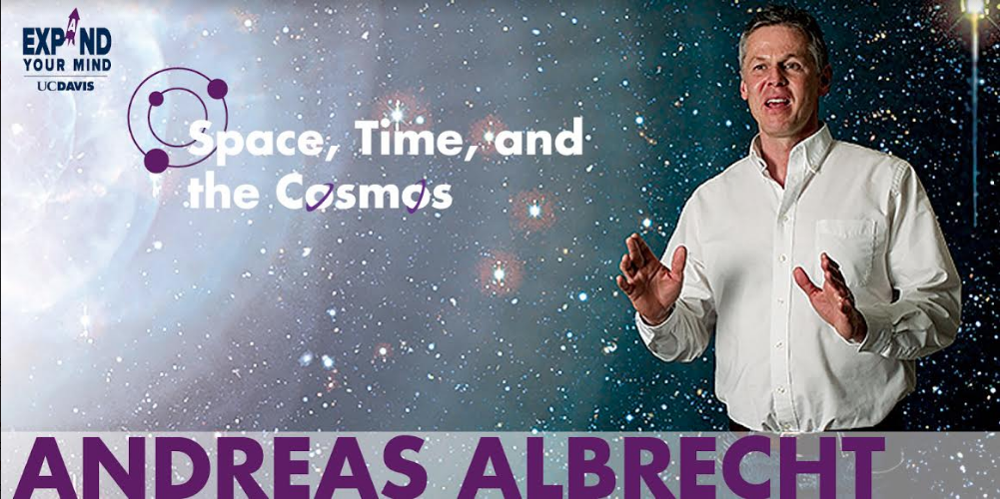

Exploring Identity
As part of the communications and design team for UC Davis Undergraduate Education (UE), my responsibilities include creating graphics for print and web for clients under the UE department. My job is to stay within the UC Davis marketing guidelines while still expressing my full creative style.
First-Year Seminar Series
First-Year Seminars (FYS) are small, innovative classes that reflect an instructor's intellectual interests. My goal of this project was to create a new "identity" for FYS, incorporating their new motto of "Expand Your Mind".
Illustrator/Photoshop/InDesign
  The Olive Center
The UC Davis Olive Center is a self-funded university/industry coalition that seeks to do for olives what UC Davis did for wine.
The Olive
I created several different fliers to advertise the new line of olive oils coming out in 2016-2017 to be sold at UC Davis bookstores.
Illustrator
Undergraduate Education Communications Website
I created thumbnails for the new UC Davis Undergraduate Education Communications website. This website is specifically designed for internal UC Davis Undergraduate Education employees to submit project or photography requests. Requests will go to the editing, design, or web team.
Illustrator